Open a comparison for full-resolution pixels. See the capture notes for remaining differences.
2.870% of pixels exceed a maximum RGB-channel delta of 12.
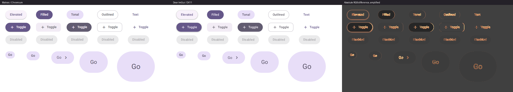
0.974% of pixels exceed a maximum RGB-channel delta of 12.
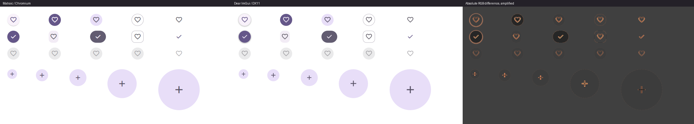
1.614% of pixels exceed a maximum RGB-channel delta of 12.
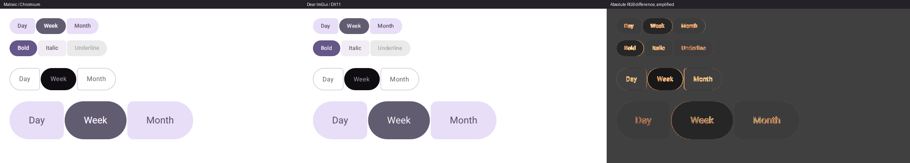
1.804% of pixels exceed a maximum RGB-channel delta of 12.
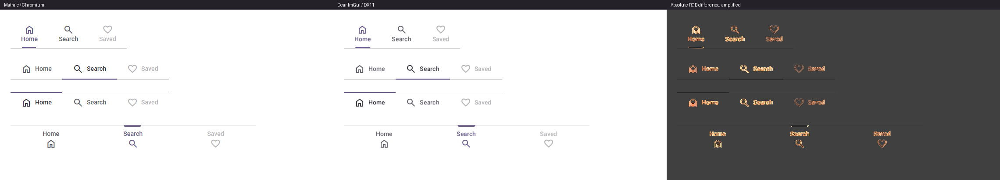
1.588% of pixels exceed a maximum RGB-channel delta of 12.
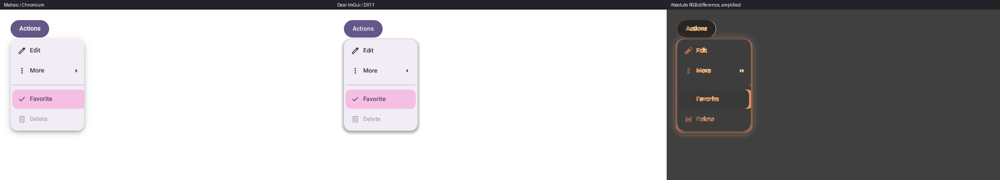
1.588% of pixels exceed a maximum RGB-channel delta of 12.
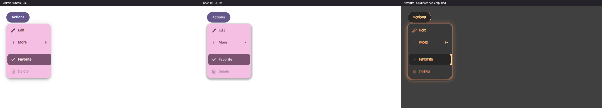
2.368% of pixels exceed a maximum RGB-channel delta of 12.
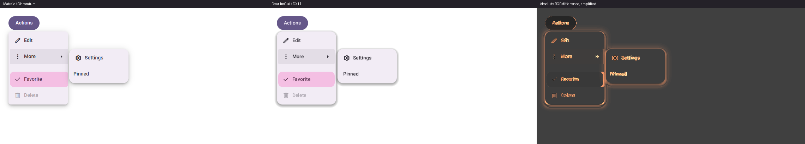
2.138% of pixels exceed a maximum RGB-channel delta of 12.
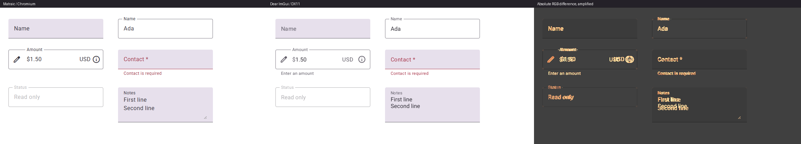
0.254% of pixels exceed a maximum RGB-channel delta of 12.
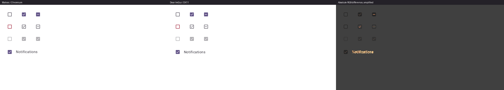
0.474% of pixels exceed a maximum RGB-channel delta of 12.
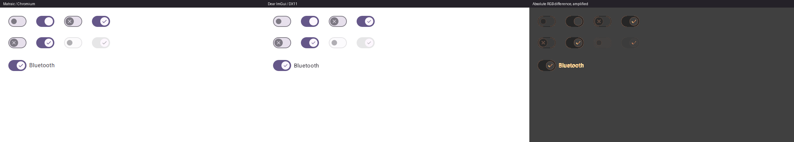
0.310% of pixels exceed a maximum RGB-channel delta of 12.
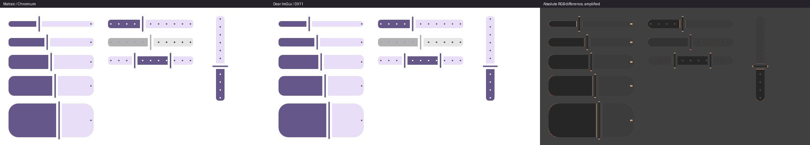
1.967% of pixels exceed a maximum RGB-channel delta of 12.
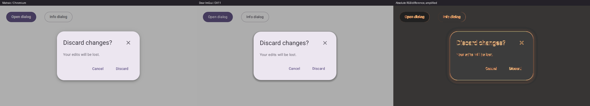
0.325% of pixels exceed a maximum RGB-channel delta of 12.
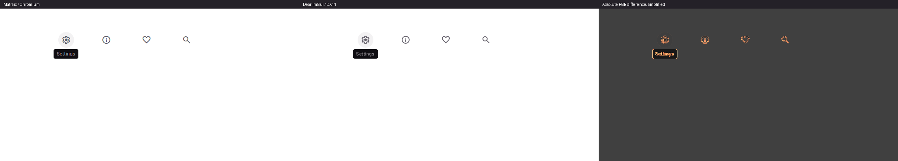
2.516% of pixels exceed a maximum RGB-channel delta of 12.
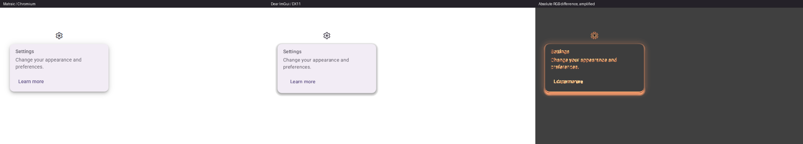
0.365% of pixels exceed a maximum RGB-channel delta of 12.
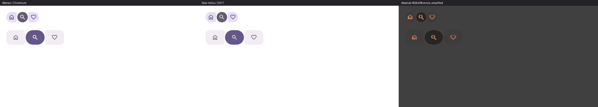
2.976% of pixels exceed a maximum RGB-channel delta of 12.
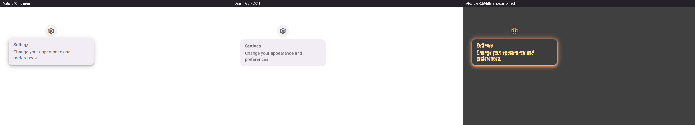
2.417% of pixels exceed a maximum RGB-channel delta of 12.
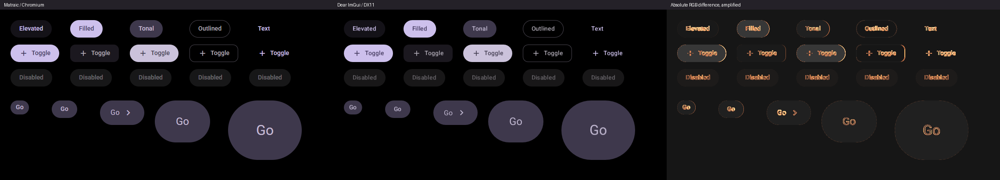
0.806% of pixels exceed a maximum RGB-channel delta of 12.
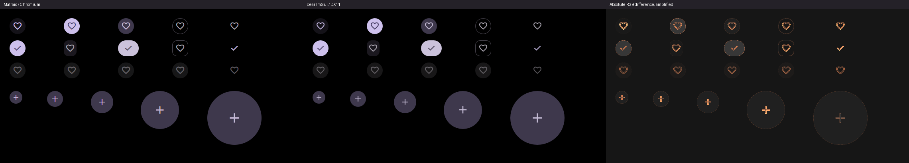
1.654% of pixels exceed a maximum RGB-channel delta of 12.
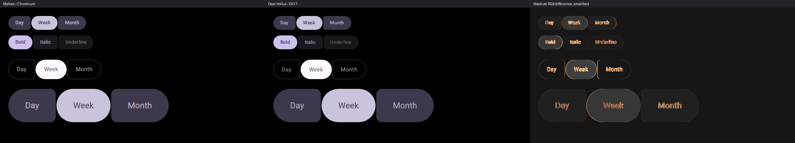
1.862% of pixels exceed a maximum RGB-channel delta of 12.
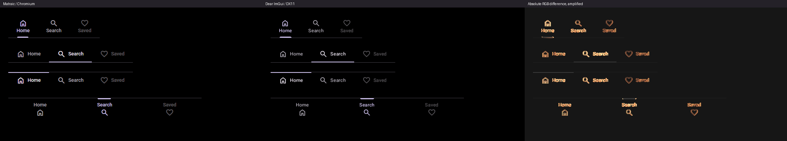
0.736% of pixels exceed a maximum RGB-channel delta of 12.
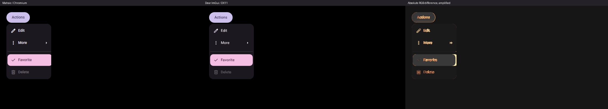
0.738% of pixels exceed a maximum RGB-channel delta of 12.
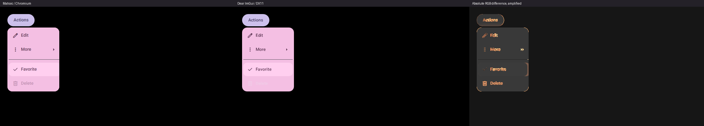
1.198% of pixels exceed a maximum RGB-channel delta of 12.
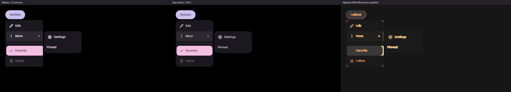
2.205% of pixels exceed a maximum RGB-channel delta of 12.
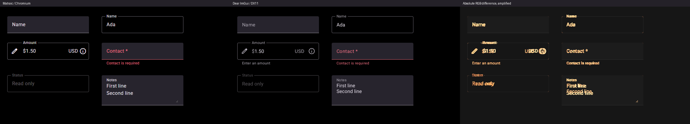
0.278% of pixels exceed a maximum RGB-channel delta of 12.
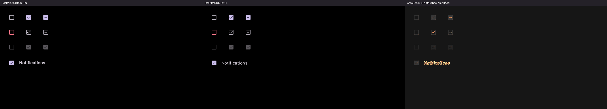
0.443% of pixels exceed a maximum RGB-channel delta of 12.
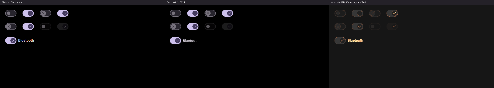
0.395% of pixels exceed a maximum RGB-channel delta of 12.
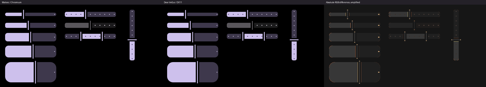
1.709% of pixels exceed a maximum RGB-channel delta of 12.
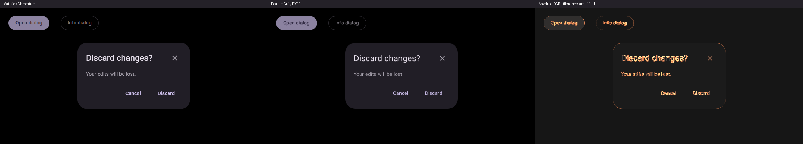
0.339% of pixels exceed a maximum RGB-channel delta of 12.
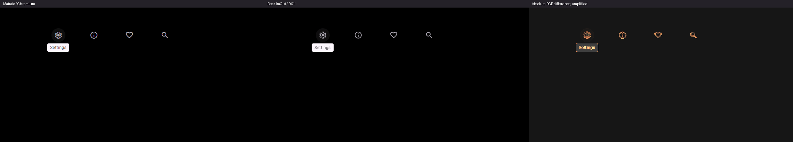
1.289% of pixels exceed a maximum RGB-channel delta of 12.
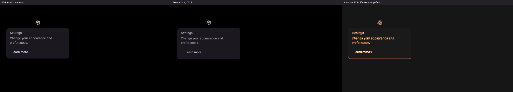
0.371% of pixels exceed a maximum RGB-channel delta of 12.
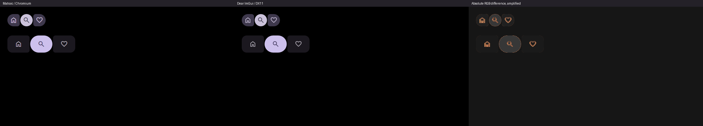
1.869% of pixels exceed a maximum RGB-channel delta of 12.
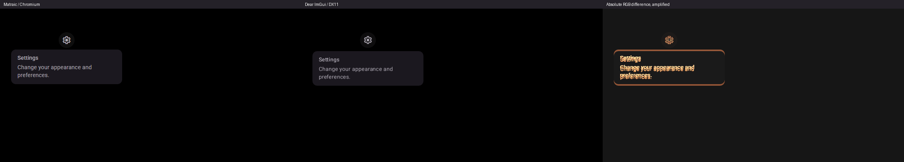